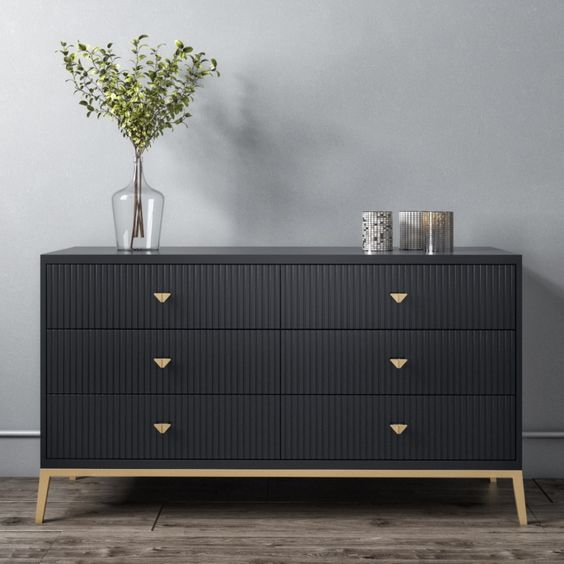

SONS OF NAMBI
Sons of Nambi is the name of our latest moody collection that's dedicated to the young,hip and trendy men who love interior decor. This collection is inspired by gentle masculinity and the need to have a comfortable and stylish space. From sofas, to accent chairs and dressers, we have everything you need to make your space comfortable, chic and stylish.
